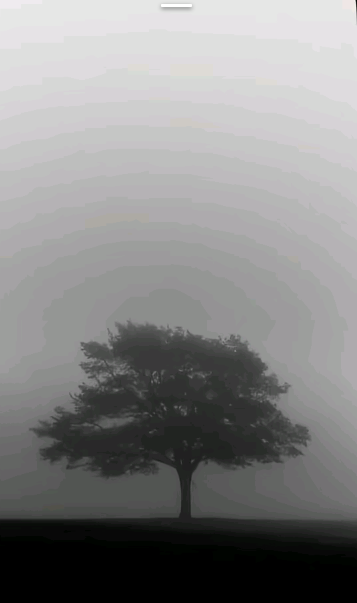

Web Developer | Creative Designer | Space Enthusiast

Hallo, saya seorang web developer dan kreator digital yang terinspirasi oleh estetika luar angkasa ala NASA. Saya suka membangun website futuristik, clean, modern, dan fungsional. Saya percaya bahwa teknologi adalah bagian dari perjalanan manusia menjelajahi semesta.
Website portofolio bertema galaksi dengan animasi bintang dan efek parallax.
Aplikasi untuk menampilkan foto satelit NASA menggunakan public API.
Futuristik UI design kit bertema Neon dan Dark Space.
Instagram: sanlysm_08
TikTok: sannnz_8aa